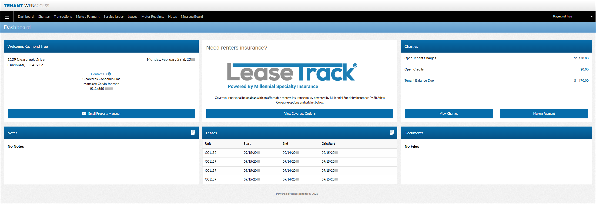

Tenant Web Access
Tenant Web Access (TWA) is a web portal that allows your tenants to manage various aspects of their leases, such as viewing their balance due, transaction history, meter readings, history/notes, and service issues. Additionally, tenants can make online payments with ePay, communicate with property managers and other TWA user via the message board, submit service issues, and edit their account information. TWA users also have the ability to view and sign lease documents or document packets electronically.
More Information
This feature is licensed and must be purchased separately. For more information, contact your sales representative at sales@rentmanager.com.

For more information about TWA, refer to the following:
| Set Up | Description |
|---|---|
|
Web Portal Suite |
The licensed web portal feature of Rent Manager that includes various web-based platforms such as Apply Now, Owner Web Access (OWA), and TWA. For more information, refer to Set Up Web Portal Suite. |
|
rmResident |
The mobile app with similar capabilities to TWA that tenants can use from a mobile device. For more information, refer to Set Up a Tenant or Prospect with a Tenant Web Access and rmResident Account. |
|
TWA Portal |
The customization of the TWA web portal in system web preferences determines which tools and pages best fit your tenant's needs. For more information, refer to Customize Your Tenant Web Access (TWA) Portal. |